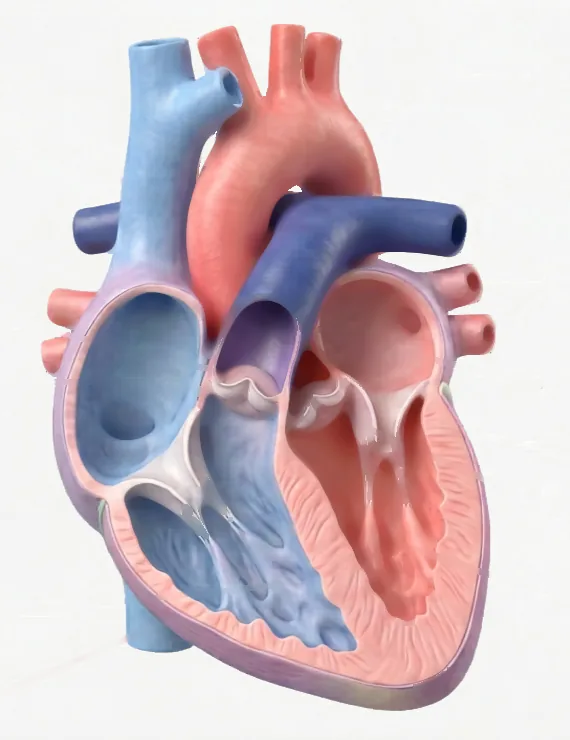

Laboratori virtual de dissecció · Una bomba doble a les teves mans — per quina raó 4 cavitats i no 2
Pots començar així: «Crec que … perquè …»
Esquema del cor per fora: els vasos vermells que hi corren per damunt són les artèries coronàries, que reguen el múscul del propi cor.
Paraules per triar (n'hi ha una per número): aorta · artèria pulmonar · vena cava inferior · vena cava superior
Mirant la cara anterior, prem els dos ventricles amb el Dit i compara'ls. Fixa't també en quin ventricle fa la punta del cor.
Pots començar així: «Les venes … porten la sang cap al cor. … la treuen. Ho sé perquè …»
Pots començar així: «La paret és … Ha de ser un múscul perquè …»
Pots començar així: «El múscul del cor necessita … La sang de dins no li serveix perquè …»
El cor no és una bossa buida: és múscul de dalt a baix. Aquest múscul es diu miocardi. Com qualsevol múscul, necessita oxigen i menjar per treballar — i el cor treballa tota la vida, sense parar. Per això té uns vasos propis que li porten sang a ell mateix: les artèries coronàries, que corren per fora del cor.
Paraules per triar: ferma · miocardi · coronàries
Quan toco el cor per fora, la textura és i elàstica, com un múscul.
Tot el cor és un múscul que es diu .
Els vasos que corren per fora del cor i el reguen es diuen artèries .
Les artèries coronàries porten sang .
Material per grup: 1 cor de porc o de xai · safata de dissecció · guants · bisturí o tisores de punta rodona · pinces · sonda · regle · etiquetes de colors · paper absorbent (de cuina).
Seguretat: talleu sempre allunyant el fil de les vostres mans i de les dels companys. Mai amb el cor a la mà: sempre a la safata. Res de menjar ni beure a la taula. Si us talleu, aviseu de seguida.
Les dues línies de punts marquen els DOS talls que fareu: un per obrir cada ventricle. En obrir-los tots dos podreu comparar el gruix de les dues parets — i descobrir quin dels dos és el ventricle esquerre.
Com funciona una vàlvula: quan està oberta deixa passar la sang; quan està tancada no la deixa tornar enrere. És una porta d'un sol sentit. (Prova-ho amb les pinces sobre una vàlvula.)
A dins el cor no és buit: està dividit en cambres. N'hi ha dues a dalt, que reben la sang que torna al cor: es diuen aurícules. I dues a baix, més grosses i musculoses, que l'expulsen: es diuen ventricles.
Pel mig hi ha una paret sencera, el septe (també se'n diu envà), que separa el costat dret del costat esquerre. Com que és sencera, la sang d'un costat no passa a l'altre. I entre les cambres hi ha les vàlvules: portes que només s'obren en un sentit.
Quan escoltes un batec no sents un cop, sinó dos: lub — dub. El so no el fa la sang movent-se: el fan les vàlvules en tancar-se de cop, com una porta que peta.
El lub són les vàlvules d'entrada (les que hi ha entre cada aurícula i el seu ventricle) quan es tanquen, just quan el ventricle comença a estrènyer. El dub són les vàlvules de sortida (a la boca de l'aorta i de l'artèria pulmonar) quan es tanquen, just quan el ventricle acaba d'estrènyer.
Pots començar així: «He comptat … cavitats. Les de dalt es diuen … i les de baix …»
Pots començar així: «El septe separa … Si tingués un forat …»
Pots començar així: «Les vàlvules impedeixen que … El so lub el fan les vàlvules d'…»
Paraules i números per triar: 2 · 2 · 4 · septe · vàlvules · entrada · sortida
He comptat cavitats: aurícules a dalt i ventricles a baix.
La paret del mig que separa el costat dret de l'esquerre es diu el .
Les portes que deixen passar la sang en un sol sentit es diuen .
El so «lub» el fan les vàlvules d' i el so «dub», les de .
Per funcionar bé, el septe ha de tenir .
Escriu el nom al costat de cada cambra, amb una fletxa. Si no recordes un nom, mira el vocabulari de dalt de tot. (A la fitxa en paper, copia aquest dibuix.)
Gruix de la paret del ventricle dret: mm
Gruix de la paret del ventricle esquerre: mm
Cada cor és diferent: és normal que el teu valor no coincideixi exactament amb el dels companys. Si mesures dues vegades, tampoc no et donarà exactament igual (error de mesura).
Pots començar així: «La paret més gruixuda és la del ventricle … perquè envia la sang …»
El cor són, de fet, dues bombes dins del mateix òrgan. La dreta envia la sang als pulmons, que són a tocar i tenen capil·lars finíssims: necessita poca força. L'esquerra l'envia a tot el cos, fins al dit del peu i fins al cap: per això la seva paret és molt més gruixuda. Ho havies dit així?
Comença pel número 1 allà on la sang arriba al cor pobra en oxigen.
Pensa en la teva cama: el múscul de la cuixa és molt més gros que el del dit petit, perquè ha d'empènyer molt més pes. Amb el cor passa el mateix: el costat que ha d'empènyer la sang més lluny té la paret més gruixuda.
Un dels dos costats del cor fa un viatge molt curt: la sang només ha d'anar fins als pulmons, que són just al costat. L'altre l'ha d'enviar fins al cap i fins als dits dels peus, i tornar.
La paret més gruixuda és la del ventricle .
I aquest ventricle envia la sang .
| Dada mesurada en una persona sana | Ventricle dret | Ventricle esquerre |
|---|---|---|
| Pressió màxima que genera | ~25 mmHg | ~120 mmHg |
| Gruix de la paret | ~4 mm | ~12 mm |
| Volum que expulsa a cada batec | ~70 mL | ~70 mL |
Totes tres dades són reals i les tres et fan falta.
L'Arnau té 14 anys i va néixer amb un forat al septe que separa els dos ventricles. Símptomes: corrent es queda enrere molt abans que els companys i respira molt de pressa; en repòs està perfectament bé. El metge li sent un bufec (un soroll de sang que passa per on no hauria de passar). Els llavis i les ungles li tenen el color normal: no es posa blau.
La Nadia té 58 anys i té les artèries coronàries parcialment tapades per plaques de greix. Símptomes: quan puja escales li fa un dolor opressiu al pit i s'ha d'aturar; en aturar-se, al cap d'un parell de minuts el dolor desapareix del tot.
Abans de mirar: segons les pressions dels dos ventricles, cap a on creus que passa la sang pel forat?
Tria quant està tapada la coronària i compara l'oxigen que necessita el múscul del cor amb el que li arriba.
Cas A (forat al septe). El costat esquerre empeny molt més fort que el dret (ho has comprovat tocant les parets). Per això, pel forat, la sang passa de l'esquerre al dret, i no al contrari. Resultat: una part de la sang que ja portava oxigen torna als pulmons una segona vegada, sense haver anat al cos. El costat dret i els pulmons han de moure molta més sang del que els toca, i s'esgoten. Quan l'Arnau corre i necessita molt més cabal, el sistema no dona més de si: es cansa i respira ràpid. La sang que surt cap al cos porta l'oxigen normal — per això no es posa blau.
Cas B (coronàries tapades). Les coronàries reguen el múscul del propi cor. Si estan mig tapades, en repòs encara hi passa prou sang. Però pujant escales el cor ha de treballar molt més i necessita més oxigen del que li arriba: el múscul es queixa i fa mal. En aturar-se, el cor torna a necessitar poc i el dolor marxa.
Escriu A o B a la primera línia. Paraules per triar a les altres dues: oxigen · miocardi
He triat el cas .
Si he triat el cas A: al costat dret del cor i als pulmons hi arriba massa sang, i el que NO canvia és l' que surt cap al cos.
Si he triat el cas B: al múscul del cor (el ) li arriba menys sang de la que necessita quan fa esforç.
Els dos casos tenen els símptomes .
Fes servir els 4 passos de sempre: «Observo que…», «Em pregunto per quina raó…», «Això té a veure amb…», «Per tant…». Per quina raó la persona que has triat es troba malament quan fa esforç i bé en repòs?
| Animal | Cavitats del cor | Es barreja la sang? | Temperatura del cos |
|---|---|---|---|
| Peix | 2 | No (un sol circuit) | La de l'aigua |
| Granota | 3 (1 ventricle) | Sí, una part | La de l'ambient |
| Gos, humà | 4 | No | Constant, ~37 °C |
② Com ho mesuraries de debò? Avui has comparat les parets tocant-les i amb un regle en un sol cor. Dissenya com comprovaries objectivament, amb els cors de tots els grups, que el ventricle esquerre té la paret més gruixuda.
Pots començar així: «El cor té 4 cavitats perquè …»

Cor tallat de dalt a baix, vist pel davant: el costat dret del cor queda a l'esquerra de la imatge. Els números de colors són les teves etiquetes.
IE Temple · Biologia i Geologia 3r ESO · El nostre cos en marxa · Sessió 4 · Laboratori virtual (els dibuixos són esquemes propis; el cor real pot variar una mica).